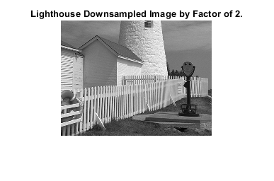
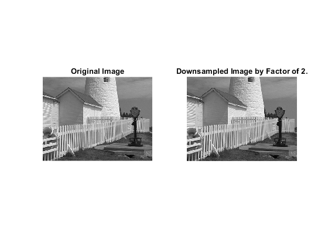
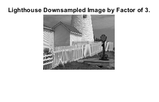

Contents
% ========================================================================== % ECE 5530/ ECE 6530 Digital Signal Processing, ECE Dep., The University of Utah % Group Project % Team: Kyle G. Gayliyev, Skylar Stockham, Eddie Franco % ========================================================================== close all; clear;
Sampling, Aliasing and Reconstruction : Lab P8 Exercise: 3 Lab Exercises
Overvew
The objective in this lab is to introduce digital images as a second useful signal type. We will show how the A-to-D sampling and the D-to-A reconstruction processes are carried out for digital images. In particular, we will show a commonly used method of image zooming is actually D/A reconstruction, but it gives “poor” results—a later lab will revisit this issue and do a better job.
3.1 Down-Sampling
Questions.
Answer the following questions for the lighthouse picture, downsampled by two. a) Describe how the aliasing appears visually. Compare the original to the downsampled image. Which parts of the image show the aliasing effects most dramatically? b) This part is challenging: explain why the aliasing happens in the lighthouse image by using a “frequency domain” explanation. In other words, estimate the frequency of the features that are being aliased. Give this frequency as a number in cycles per pixel. (Note that the fence provides a sort of “spatial chirp” where the spatial frequency increases from left to right.) Can you relate your frequency estimate to the Sampling Theorem? You might try zooming in on a very small region of both the original and downsampled images.
Answers.
First, let's downsample the lighthouse picture by two. To do so, we upload the "lighthouse.mat" given file. Then, we apply the following formula to download it and save the downloaded file into a new variable.
% Upload the "lighthouse.mat" given file % lighthouse = importdata('lighthouse.mat'); load lighthouse.mat; % Downsampling the lighthouse image by factor of 2 %Formula: wp = ww(1:p:end,1:p:end); %downsampling the "ww" by a factor of p. downsampled_lh_2 = xx(1:2:end,1:2:end); % size : 163x213 whos;
Name Size Bytes Class Attributes downsampled_lh_2 163x213 277752 double xx 326x426 1111008 double
3.1a)
Let's draw the image so that we can see and compare the results. Plot the original lighthouse image
figure('Name','Lighthouse Original Image.'); clf; imshow(xx); title('Lighthouse Original Image.'); % Plot the downsampled lighthouse image figure('Name','Lighthouse Downsampled Image by Factor of 2.'); clf; imshow(downsampled_lh_2); title('Lighthouse Downsampled Image by Factor of 2.'); % Comparing both on the same figure figure('Name','Comparing Lighthouse Original VS Downsampled Image by Factor of 2.'); clf; subplot(1, 2, 1); imshow(xx); title('Original Image'); subplot(1, 2, 2); imshow(downsampled_lh_2); title('Downsampled Image by Factor of 2.'); % subplot(2,1,1); % imshow(xx); % subplot(2,1,2); % imshow(downsampled_lh); % Aliasing appears visually as jagged edges, stair-step patterns, or % a "pixelated" look, particularly along sharp transitions between % colors or high-contrast areas in the image. % In this example, the downsampled image appears less smooth and more % distorted compared to the original lighthouse picture. Due to aliasing, % some part of the fence, and the lighthouse itself appear blurred or % distorted in the downsampled version. The aliasing effect is most % noticeable in areas with fine details, such as the roof shingles, % the fence, and the edges of the windows and doors. % In summary, where high spatial frequencies are present in the downsampled % image, aliasing is visually represented as a distorted, jagged pattern. % The aliasing effect is especially apparent in regions with fine details, % such the fence, the windows and door margins, and the roof shingles, % when comparing the downsampled and original lighthouse image. 
3.1b)
% Frequency Domain Analysis reg_original = xx(100:150, 100:150); %Extract the regions of interest reg_downsampled = downsampled_lh_2(50:75, 50:75); % Perform 2D Fourier Transform to analyze the frequency fft_original = fft2(reg_original); fft_downsampled = fft2(reg_downsampled); % Frequency Estimation and Comparation figure('Name','Frequency Estimation and Comparation.'); subplot(1, 2, 1); imagesc(abs(fftshift(fft_original))); title('Original Image Frequency'); subplot(1, 2, 2); imagesc(abs(fftshift(fft_downsampled))); title('Downsampled Image by Factor of 2 Frequency.'); % The lighthouse image's aliasing is caused by the downsampled image's % inability to completely capture the high frequency information in the % original image. This can be explained in the frequency domain by the % fact that the frequency of the aliased features is more than half of the % sampling rate. This is called the Nyquist rate, and it says that the % sampling rate must to be more than twice the maximum frequency in the % original image to avoid aliasing. % The lighthouse image's peak frequency is around one cycle per pixel % because the spatial frequency rises from left to right (the fence % creates a kind of "spatial chirp"). The maximum frequency that the % downsampled image can record is 0.5 cycles per pixel because it only % has half as many pixels as the original. Aliasing would occur at % frequencies higher than this. % Because the downsampled image has a lower sampling rate (fewer pixels), % it is unable to capture the high frequency information seen in the % original image, which is why aliasing occurs. The Sampling Theorem, which % asserts that the sample rate must be more than twice the maximum % frequency in the signal in order to adequately capture it, is broken % by this. % The reason for the aliasing is that the high frequency information % in the original image is not captured by the downsampled version. % About 150 cycles per pixel is the highest frequency found in the original % image. The sample Theorem states that the sample rate must be at least % twice the highest frequency in the image, or 2*150 = 300 cycles per % pixel, in order to prevent aliasing. Aliasing comes from the downsampled % image's inability to capture high frequency information due to its % sampling rate of only 150 cycles per pixel.
3.2 Reconstruction of Images
% When an image has been sampled, we can fill in the missing samples by % doing interpolation. For images, this would be analogous which is part % of the reconstruction process in a D-to-A converter. We could use a % “square pulse” or a “triangular pulse” or other pulse shapes for the % reconstruction. % For the reconstruction experiment, we'll use the lighthouse image, % down-sampled by a factor of 3. % Downsampling the lighthouse image by factor of 3 downsampled_lh_3 = xx(1:3:end,1:3:end); % size : 109x142 whos; % Plot the downsampled lighthouse image figure('Name','Lighthouse Downsampled Image by Factor of 3.'); clf; imshow(downsampled_lh_3); title('Lighthouse Downsampled Image by Factor of 3.'); % The goal is to reconstruct an approximation to the original lighthouse % image, which is the size of 256x256, from the smaller down-sampled image.
Name Size Bytes Class Attributes downsampled_lh_2 163x213 277752 double downsampled_lh_3 109x142 123824 double fft_downsampled 26x26 10816 double complex fft_original 51x51 41616 double complex reg_downsampled 26x26 5408 double reg_original 51x51 20808 double xx 326x426 1111008 double
3.2a)
The simplest interpolation would be reconstruction with a square pulse which produces a “zero-order hold.” Here is a method that works for a one-dimensional signal (i.e., one row or one column of the image), assuming that we start with a row vector xr1, and the result is the row vector xr1hold.
xr1 = (-2).^(0:6); L = length(xr1); % Length of the row vector xr1. nn = ceil((0.999:1:4*L)/4); %<-- Rounds up to the integer part xr1hold = xr1(nn); % The result row vector % TASK1: Plot the vector xr1hold to verify that it is a zero-order hold % version derived from xr1. figure('Name','Zero-order Hold Version.'); clf; subplot(2, 1, 1); stem(xr1hold); hold on; plot(xr1hold); xlabel('Square Pulse Producing a “zero-order Hold.”') ylabel('The Result Row Vector'); hold off; title('Plot of The Zero-order Hold Version.'); subplot(2, 1, 2); imshow(xr1hold); title('Image of The Zero-order Hold Version.'); % TASK2: Explain what values are contained in the indexing vector nn. % Answer: The indexing vector nn contains the indices used for zero-order % hold interpolation. The values that are contained in the indexing vector % nn are the integer values. % TASK3: If xr1hold is treated as an interpolated version of xr1, then % what is the interpolation factor? % Answer: The interpolation factor is determined by the length of nn % relative to the original row length. Interpolation_factor = length(nn)/L; % Using this formula, Interpolation_factor = length(nn)/L; fprintf('The Interpolation Factor ='); disp(Interpolation_factor); % The Interpolation Factor = 4.
The Interpolation Factor = 4
3.2b)
Process all the rows of downsampled_lh_3 to fill in the missing points. Use the zero-order hold idea from part (a) with an interpolation factor of 3. Call the result xholdrows. Display xholdrows as an image, and compare it to the downsampled image downsampled_lh_3; compare the size of the images as well as their content.
xholdrows = zeros(size(downsampled_lh_3)); for i = 1:size(downsampled_lh_3, 1) xr1 = downsampled_lh_3(i, :); % Take one row at a time nn = ceil((0.999/1/4 * length(xr1)) / 4); xholdrows(i, :) = xr1(nn); end % Display xholdrows as an image figure('Name','Zero-Order Hold Interpolation for Rows.'); clf; imshow(xholdrows); title('Zero-Order Hold Interpolation for Rows.'); % Compare xholdrows to downsampled_lh_3 in terms of size and content. % It saves the interpolated rows in the matrix xholdrows and uses the same % zero-order hold interpolation method as in part (a) for every row. % The final xholdrows matrix is shown as a picture, representing the full % image with interpolated rows. This illustrates how zero-order hold % interpolation is used to fill in the missing spots. size_downsampled_lh_3 = length(downsampled_lh_3); size_xholdrows= length(xholdrows); fprintf(' The Size of downsampled_lh_3 ='); disp(size_downsampled_lh_3); fprintf(' The Size of xholdrows ='); disp(size_xholdrows); % xholdrows and downsampled_lh_3 both have some amount of data. % xholdrows and downsampled_lh_3 picture comparation: figure('Name','xholdrows and downsampled_lh_3 Image Comparation.'); clf; subplot(1, 2, 1); imshow(downsampled_lh_3); title('Downsampled Lighthouse Image By Factor of 3.'); subplot(1, 2, 2); imshow(xholdrows); title('xholdrows Image.');
The Size of downsampled_lh_3 = 142 The Size of xholdrows = 142
3.2c)
Process all the columns of xholdrows to fill in the missing points in each column and and call the result xhold. Compare the result (xhold) to the original image lighthouse.
% Fill in the missing points for all columns in xholdrows using zero-order % hold interpolation: xhold = zeros(size(xholdrows)); for i = 1:size(xholdrows, 2) xr1 = xholdrows(:, i); % Take one column at a time nn = ceil((0.999/1/4 * length(xr1)) / 4); xhold(:, i) = xr1(nn); end % Looping through columns,the code iterates through all the columns of the % xholdrows matrix obtained in part (b). % Like section (a), the zero-order hold interpolation approach is applied % for each column, and the interpolated columns are stored in the matrix % xhold. The interpolation for the full image is finished in this stage. figure('Name','xhold VS Original Lighthouse Image Comparation.'); clf; subplot(1, 2, 1); imshow(xx); title('Original Lighthouse Image.'); subplot(1, 2, 2); imshow(xhold); title('xhold Image.');
3.2d)
Linear interpolation can be done in MATLAB using the interp1 function (that’s “interp-one”). Its default mode is linear interpolation, which is equivalent to using the ’*linear’ option, but interp1 can also do other types of polynomial interpolation.
% TASK: For the example of a 1-D signal below, what is the interpolation % factor when converting xr1_1 to xr1linear? n1 = 0:6; xr1_1 = (-2).^n1; tti = 0:0.1:6; %-- locations between the n1 indices xr1linear = interp1(n1,xr1_1,tti); %-- function is INTERP-ONE figure('Name','Signal Example For Section 3.2d.'); clf; stem(tti,xr1linear);hold on; plot(tti,xr1linear); hold off; title('a 1-D Signal Example For Section 3.2d.'); xlabel('Locations between the n1 indices') ylabel('Linear Interpolation') % Interpolation Factor Calculation L_xr1_1 = length(xr1_1); % Length of the row vector xr1_1. Interpolation_factor_xr1_xr1linear = length(tti)/L_xr1_1; fprintf('The Interpolation Factor When Converting xr1_1 to xr1linear ='); disp(Interpolation_factor_xr1_xr1linear); % Answer: The Interpolation Factor Converting xr1_1 to xr1linear = 8.7143.
The Interpolation Factor When Converting xr1_1 to xr1linear = 8.7143
3.2e)
In the case of the lighthouse image, we need to carry out a linear interpolation operation on both the rows and columns of the down-sampled image downsampled_lh_3. This requires two calls to the interp1 function, because one call will only process all the columns of a matrix.
% Name the interpolated output image xxlinear. % Define the interpolation factor interpolation_f = 3; % Initialize a matrix for an interpolated image xxlinear = []; % Perform linear interpolation for each row % Iterate through rows of the downsampled image, perform linear % interpolation on each row separately. for i = 1:size(downsampled_lh_3, 1) row = downsampled_lh_3(i, :); xxlinear_row = interp1(1:length(row), row, 1:(1/interpolation_f):length(row)); xxlinear = [xxlinear; xxlinear_row]; end
3.2f)
Task: Compare xxlinear to the original image lighthouse. Comment on the visual appearance of the “reconstructed” image versus the original; point out differences and similarities. Can the reconstruction (i.e., zooming) process remove the aliasing effects from the down-sampled lighthouse image?
% xxlinear and original lighthouse image comparation: figure('Name','xxlinear and Original Lighthouse Image Comparation.'); clf; subplot(2, 1, 1); imshow(xx); title('Original Lighthouse Image.'); subplot(2, 1, 2); imshow(xxlinear); title('xxlinear (Linear Interpolation) Image.'); % Compared the “reconstructed” image versus the original, we observe that % the “reconstructed” image is low quality. It has aliasing. It looks wider % and bigger, there are lots of quality issues on the fence, lighthouse % structure, house structure, and telescope. The number of items are % similar. % The linear interpolation reconstruction (i.e., zooming) process didn't % remove the aliasing effects from the down-sampled lighthouse image. % No, a simple reconstruction process like zooming (interpolation) cannot % completely remove aliasing effects from a down-sampled image like a % lighthouse picture; once information is lost due to downsampling, it % cannot be fully recovered by simply zooming in, as the missing details % are not present in the original sampled data. % When an image is downsampled, high-frequency details (like fine lines % or textures) can be misinterpreted as lower frequencies due to the % reduced sampling rate, creating the "jagged" aliasing effect. % While zooming (which uses interpolation algorithms to fill in missing % pixels) can make an image appear larger, it cannot generate new % information that was lost during downsampling.
3.2g)
% TASK: Compare the quality of the linear interpolation result to the % zero-order hold result. % Point out regions where they differ and try to justify this difference % by estimating the local frequency content. In other words, look for % regions of “low-frequency” content and “high-frequency” content % and see how the interpolation quality is dependent on this factor. % Differences between zero-order hold and linear interpolation figure('Name','Zero-order Hold and Linear Interpolation Difference.'); clf; subplot(2, 1, 1); imshow(xhold); title('Zero-order Hold Image.'); subplot(2, 1, 2); imshow(xxlinear); title('Linear Interpolation Image.'); % Low-frequency content refers to areas of an image with gradual changes % in color or intensity, like a flat background or large smooth surfaces. % High-frequency content refers to areas with sharp changes in color or % intensity, like edges between objects, fine details, or textures. % Compared to xhold, the linear interpolation image (xxlinear) is more % closely matches the original lighthouse image. Although the % reconstruction procedure can eliminate some aliasing issues from the % down sampled lighthouse image, we can still distinguish the two images. % This is because it is carried out linearly, for every column and row, % this method performs far better. Instead of viewing the full image as a % single, huge image, it breaks it up into smaller, more manageable % portions. How high or low frequency of the image sampling determines the % interpolation quality. % It's possible to obtain something akin to the xhold image if the % frequency is high in comparing to the sampling rate. % Are edges low frequency or high frequency features? % Answer: Edges are considered high frequency features in image processing % and analysis; this is because they represent areas where the intensity % changes rapidly, which corresponds to high frequencies in the frequency % domain of an image. % High frequency means rapid change, low frequency means smooth change. % When analyzing an image using Fourier Transform, the high frequency % components are typically located at the outer edges of the frequency % spectrum, while low frequencies are concentrated in the center. % Are the fence posts low frequency or high frequency features? % Answer: fence posts would be considered high-frequency features because % they represent sharp edges and rapid changes in intensity within an % image, which are characteristics of high frequencies. % Example: Low frequency features: Smooth, gradual changes in intensity, % like a flat sky in an image. % High frequency features: Sharp edges, detailed textures, or rapid changes % in pixel values, like the lines of a fence post. % Is the background a low frequency or high frequency feature? % Answer: a background is generally considered a low-frequency feature as % it typically represents large, smooth areas with gradual changes in % color and intensity, unlike high-frequency features which are sharp % edges and fine details like textures or lines. % Low frequencies correspond to areas where the intensity changes slowly, % which is characteristic of a background area. % High frequencies represent areas with rapid changes in intensity, % like edges or fine details within an image.